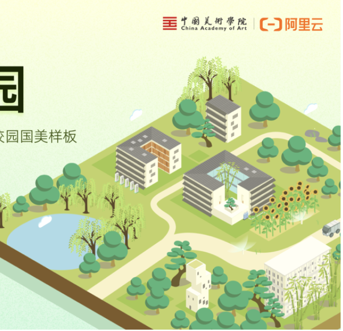
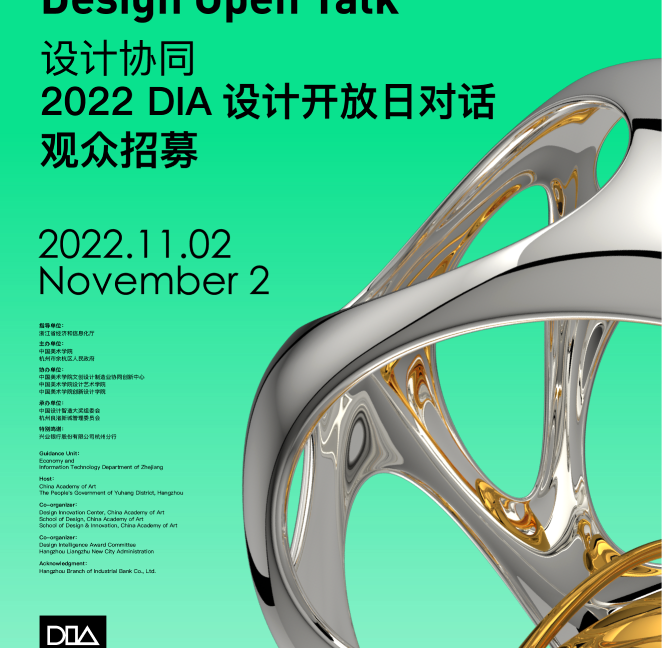

LUO SHAN
luoshan3398@qq.com
Setting up the stage is
the most frequent task I've undertaken in recent years, and there's
a lot of finesse involved here. How do you get all stakeholders to
be willing to participate? How do you make the snowball effect
happen? By talking to A about B and to B about A, the matter might
just come to fruition. In the end, you also need to create momentum,
and make it substantial, so that the internet ecosystem starts to
operate. The basic way to play the game is like this, but there is
still a need for some fundamental, underlying elements, a good
design.
搭场子，是这几年干的最多的事情，其实这里非常有讲究，如何让所有利益既得者都愿意参与进来？如何滚雪球？拿A和B说，拿B和A说，这事或许就成了。最后你还要造势，造的大大的，互联网生态圈开始运转。游戏的玩法基本上是这样子，不过还是需要一些底层、最本质的东西，一个好设计。

